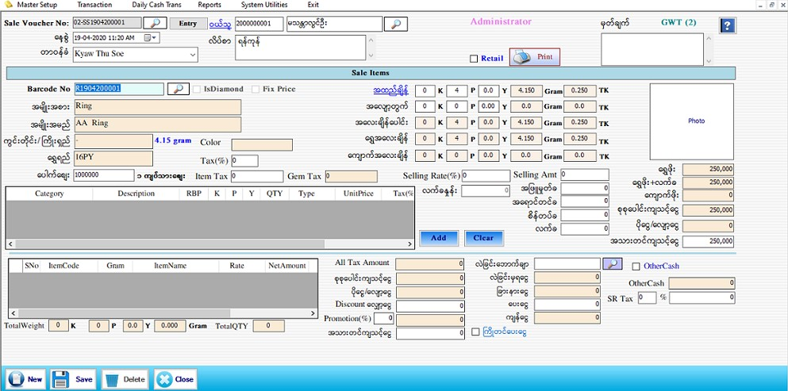

Sale Invoice

- Transaction အောက်မှ Sale Stock Form ကို ဖွင့်ပါ။
- Sale Voucher No ကို Softwareမှ Auto တပ်ပေးပါသည်။ နေ့စွဲတွင် Current Date ကိုပြပေးပါသည်။
- နေ့စွဲတွင် လက်ရှိရောက်နေသော Date ကိုပြပေးမည် ဖြစ်သည်။
- တာ၀န်ခံ၀န်ထမ်း၊ ၀ယ်သူတို့ကိုဖြည့်စွက်ပါ။၀ယ်သူ၏ code နံပတ် ကိုအလွတ်သိရှိပါက ရိုက်ထည့်လိုက်လျှင် ၀ယ်သူအမည်နှင့် လိပ်စာ ကျလာမည်ဖြစ်သည်။ ၀ယ်သူ၏ code နံပတ် ကိုအလွတ်မသိရှိပါက ၀ယ်သူဘေးရှိ မှန်ဘီလူကိုနှိပ်ပြီးရွေးချယ်ရပါမည်။မှတ်ချက်တွင်Customerနှင့်ပက်သတ်သောအကြောင်းအရာအချို့ကိုမှတ်သားထားနိုင်ပါသည်။
- Barcode No. ကို Barcode Scanner ဖြင့်လည်းဖတ်နိုင်ပါသည်။Barcode No. ဘေးတွင်ရှိသော မှန်ဘီလူကိုနှိပ်ပြီး ရောင်းချမည့် Barcode ကို ရွေးချယ် နိုင်ပါသည်။
- Barcode ကိုရွေးချယ်လိုက်သည်နှင့် Stock Set Up တွင် သတ်မှတ် ထားသည့်အတိုင်း အမျိူးအစား၊ အမျိုးအမည်၊ ကွင်း တိုင်း/ကြိုးရှည်၊ ရွှေရည်၊ ပေါက်စျေး၊ အထည်ချိန်၊ အလျော့တွက်၊ အလေးချိန်ပေါင်း၊ ရွှေအလေးချိန်၊ ကျောက်အလေးချိန်၊ လက်ခနှုန်း၊ အဖြူမှုတ်ခ၊ အရောင်တင်ခ၊ စိန်တပ်ခ၊ ကျောက်ဖိုး၊ စုစုပေါင်းကျသင့်ငွေ၊ ပိုငွေလျှော့ငွေ တို့ကိုပြပေးနေလိမ့်မည်။ပေါက်စျေးတွင် ရွှေရည်ပေါ်မူတည်ပြီး နောက်ဆုံးနေ့ရက်အချိန်၏ သတ်မှတ်ခဲ့သော ပေါက်စျေးအလိုက် ကျနေပါမည်။ အထည်တစ်ခုချင်း၏ Tax(%) ကိုလည်း သတ်မှတ်နိုင်ပါသည်။ Tax(%)တွင် Itemcategory မှသတ်မှတ်ခဲ့သော ရာခိုင်နှုန်းကျနေမည်။ ပြန်လည်ပြင်ဆင်၍လည်း သတ်မှတ်နိုင်ပါသည်။
- အထည်ချိန်ကိုလဲပြန်လည်ချိန်ချင်ပါက အထည်ချိန်ကို နှိပ်ပြီးပြန်ချိန်နိုင်ပါသည်။ အလျှော့တွက်ကိုပြန်လည် ပြင်ဆင်လိုပါကပြင်ဆင်နိုင်ပါသည်။
- ကျောက်ပါသော အထည်ဖြစ်ပါက ပါဝင်သောကျောက်ပစ္စည်းများကို ပထမဇယားတွင် ပြပေးနေလိမ့်မည်။ GemTax(%)တွင် Gem category မှသတ်မှတ်ခဲ့သော ရာခိုင်နှုန်းကျနေမည်။ ပြန်လည်ပြင်ဆင်၍ လည်းသတ်မှတ်နိုင်သည်။
- ထို့နောက် Add Button နှိပ်၍ Data များဖြည့်သွင်းပါ။ Add လုပ်ပြီးသား ပစ္စည်းတစ်ခုအား ပြန်လည် ပြင်ဆင် လိုပါက အောက်မှ Grid မှ မိမိပြင်ဆင်လိုသော Row ၏ ရှေ့ဆုံးကိုနှိပ်ပါက သက်ဆိုင်ရာ Row ၏ Data များကို အပေါ်တွင်ပြန်လည်ပြင်ဆင်နိုင်မည်ဖြစ်သည်။ပြီးနောက် Update Button အားနှိပ်ပါ။
- အသားတင်ကျသင့်ငွေ၊ Discount လျှော့ငွေ၊ ပေးငွေတွင် ဖြည့်စွက်ပါ။ စုစုပေါင်းကျသင့်ငွေ၊ ပိုငွေ-လျှော့ငွေ၊ ကျန်ငွေ တို့တွင် Software မှ Auto ကျပေးမည်။
- Promotion ပေးလိုပါက Promotion (%) ဘေးရှိ TextBox တွင် Promotion ပေးမည့် % ကိုရိုက်ထည့်လိုက်ပါက Promotion ပေးသောတန်ဖိုးသည် Auto ပေါ်လာပါမည်။ထို (%) သည် အသားတင် ကျသင့်ငွေပေါ်မူတည်ပြီးတွက်ခြင်းဖြစ်ပါသည်။
- Data များဖြည့်စွက်ပြီးပါက Save Button ကိုနှိပ်၍ သိမ်းဆည်းနိုင်ပါသည်။ Save Button ကိုနှိပ်ပြီးပါက Message box တစ်ခုတက်လာပါမည်။ Voucher ကိုတစ်ခါတည်းထုတ်မလားဟုမေးခြင်းဖြစ်ပါသည်။ OK ဟုနှိပ်လိုက်ပါက Voucher တစ်ခါတည်း ထွက်လာပါမည်။ Cancel ကိုနှိပ်လိုက်ပါက Data များကိုပဲ သိမ်းဆည်းသွားပါမည်။
- လဲခြင်းဘောက်ချာဘေးတွင်ပါရှိသောမှန်ဘီလူးကိုနှိပ်ပါက ဝယ်ခြင်း Form တွင်လဲခြင်းပြုလုပ်မည်ဟုရွေးထားသော ဘောက်ချာများကျလာပါမည်။ထိုထဲမှ ဝယ်သူကအလဲပြုလုပ်မည့်ဘောက်ချာကိုရွေးလိုက်လျှင် ဝယ်သူ လဲခြင်းမှရငွေနှင့်အသားတင်ကျသင့်ငွေတို့ကိုခြားနားထားသော ငွေပမာဏကို ခြားနားငွေတွင်တွေ့မြင်နိုင်ပါသည်။
- နိုင်ငံခြားငွေဖြင့် ချေခဲ့ပါက OtherCash Check Box ကို နှိပ်ပါ။Exchange Rate နှင့် Amount ကို ရိုက်ထည့်ပါ။
- စရံအရောင်းပြုလုပ်ခြင်းကို ထို Form တွင်ပြုလုပ်နိုင်ပါသည်။ထိုသို့ပြုလုပ်မည်ဆိုပါက ဝယ်သူပေးသောစရံငွေကို ကြိုတင်ပေးငွေဟုပြထားသော Checkbox ကိုခြစ်ပြီး ထိုငွေကိုရိုက်ထည့်ပေးရပါမည်။
- သိမ်းဆည်းပြီးသား Data များအား ပြန်လည်ကြည့်ခြင်း၊ ပြင်ဆင်ခြင်းများပြုလုပ်ချင်ပါက Sale Voucher No ၏ ဘေးတွင် ရှိသော မှန်ဘီလူး button ကိုနှိပ်ပြီးပြန်လည်ကြည့်ရှုပြင်ဆင်ချင်သော Sale Item အား ရွေးချယ် ပြီးပြင်နိုင် ပါသည်။
- သိမ်းဆည်းပြီးသား ထည့်ပြီးသား Data များကို ဖျက်လိုလျှင် Sale Voucher No ဘေးတွင် ရှိသော မှန်ဘီလူး button အားနှိပ်ပြီး ရှာပါ။ ထို့နောက် မိမိဖျက်လိုသော Data ကို Delete Button ကိုနှိပ်၍ ဖျက်နိုင်ပါသည်။
- Sale Item အသစ်ထည့်လိုပါက New Button ကိုနှိပ်ပြီး အသစ်ထည့်နိုင်ပါသည်။
- Sale Stock Form အား အသုံးပြုပြီးပါက Close Button ကိုနှိပ်၍ ပိတ်နိုင်ပါသည်။